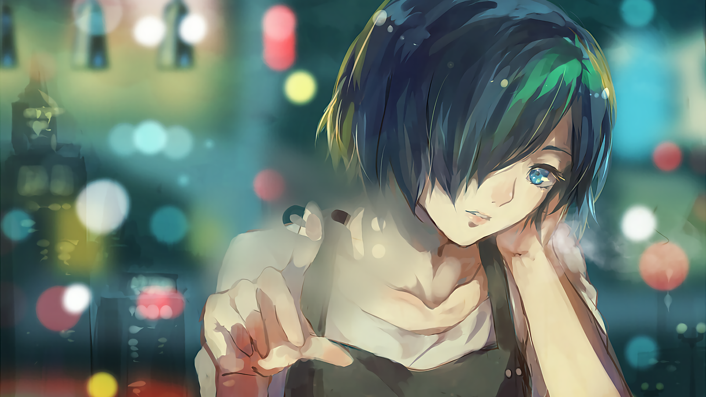
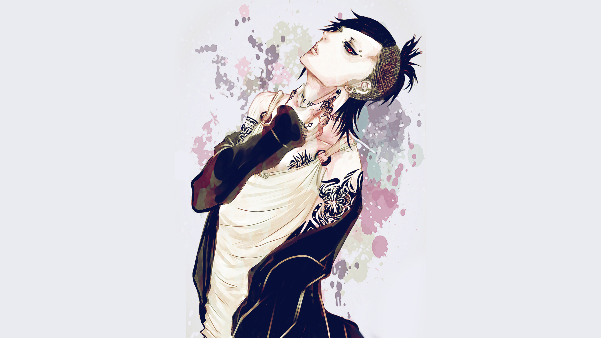
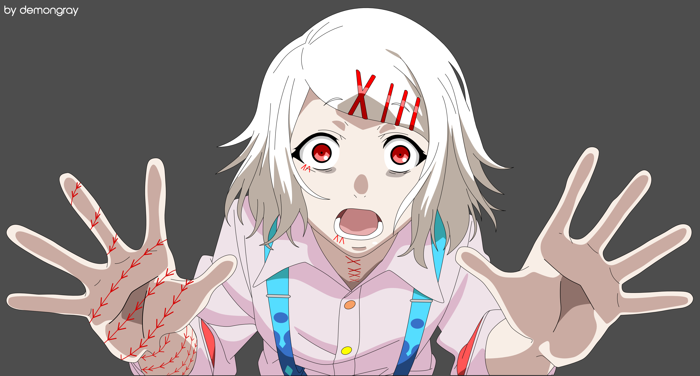
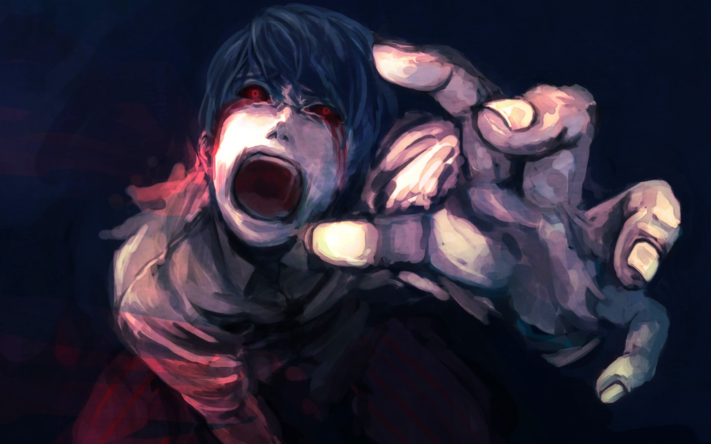

Ken Kaneki
"I'm not the protagonist of a novel or anything. I'm just a college student who likes to read, like you could find anywhere. But... if, for argument's sake, you were to write a story with me in the lead role, it would certainly be... a tragedy."

Touka Kirishima
"What the hell do you know?! It's all because I can't eat, because I could be a target at any time, all because I'm a ghoul! No matter how much I try, there's a wall I can never jump over, and there's happiness that I can never have. But I'm still hanging on to life. Despite it all."
Hideyoshi Nagachika
Hideyoshi Nagachika (永近 英良, Nagachika Hideyoshi), also known as Hide (ヒデ), is a normal human and the best friend of Ken Kaneki.

Uta
Uta (ウタ, Uta) is a ghoul and an old friend of Renji Yomo and Itori. He owns the HySy ArtMask Studio, where he sells masks, whilst also being a member of the Clowns. He is known as No Face (ノーフェイス, Nō Feisu) to the CCG investigators.

Juuzou Suzuya
Juuzou Suzuya (鈴屋 什造, Suzuya Jūzō) is a Special Class Ghoul Investigator. In the past, he went by the name Rei Suzuya (鈴屋 玲, Suzuya Rei). He was first partnered with Yukinori Shinohara, and is now currently the leader of Suzuya Squad.

Shuu Tsukiyama
Shuu Tsukiyama (月山 習, Tsukiyama Shū) was the infamous Gourmet (美食家, Bishokuka) ghoul of the 20th ward.He comes from the extremely wealthy and influential Tsukiyama family which his father, Mirumo Tsukiyama was the head of.